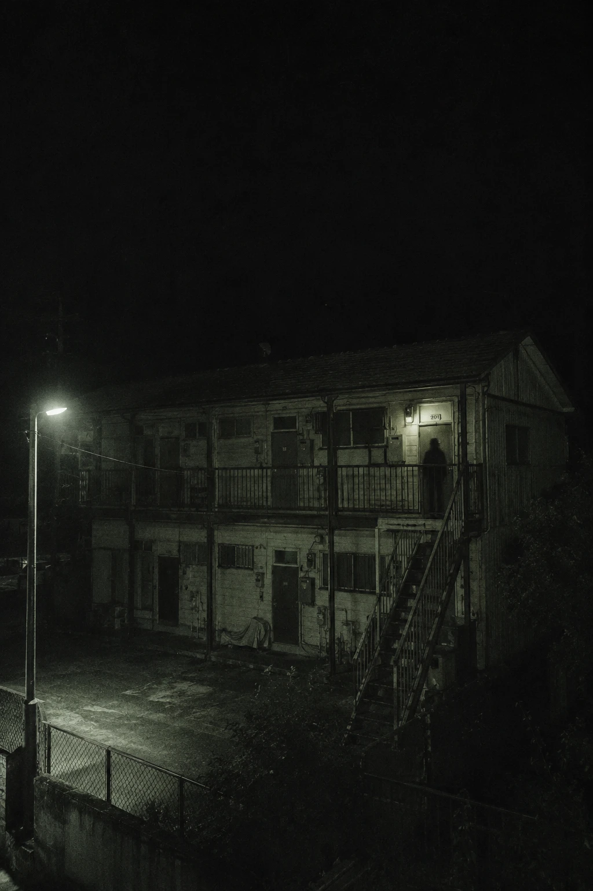
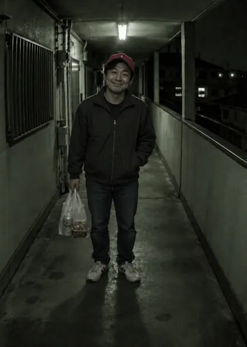
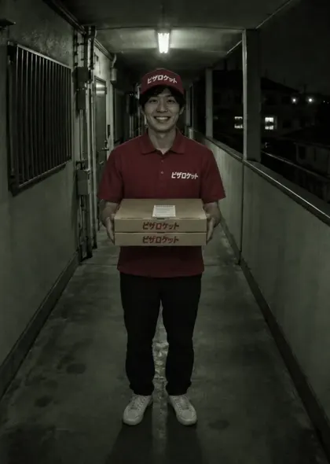
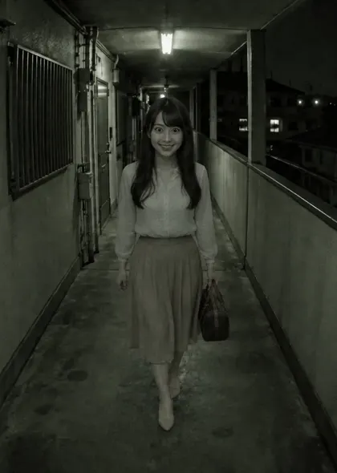

事故物件三十一日生存記録
事故物件住みます芸人として、三十一日間、二〇一号室に住む。夜ごと、インターホンが鳴る。開けるか、断るか。
朝は自分のスマホで、マネージャーのLINE・事故物件メモ・ニュース・注文履歴を確かめる。夜、インターホンが鳴ったら、親機のモニターで訪問者を調べる。
危険な相手を開ければ、その夜で配信は終わる。本物を断れば、視聴者の信用を失う。



ホラー表現（ジャンプスケア・光の点滅）があります。設定で驚かせる音の大きさや点滅を調整できます。